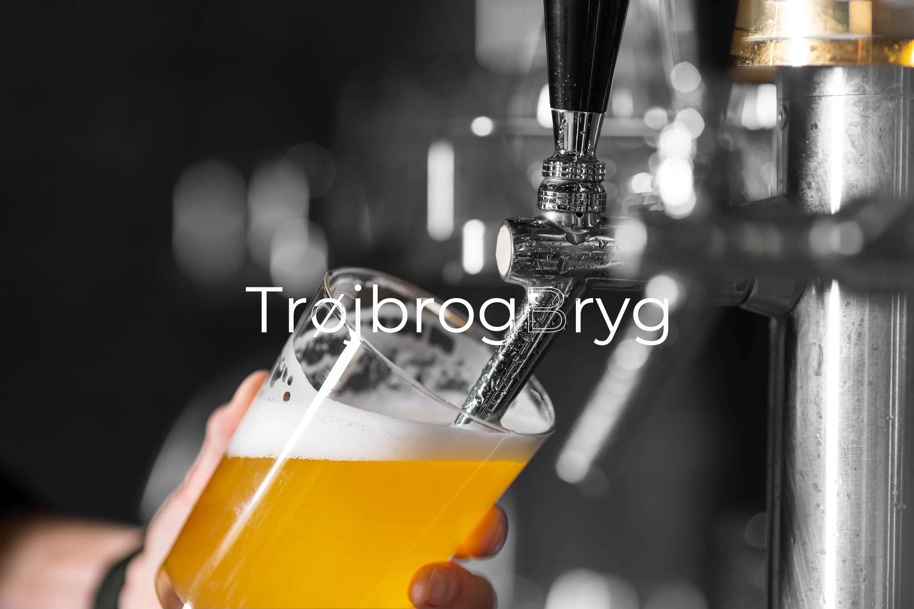

Vi vil gerne invitere jer til at deltage i en banebrydende rejse
inden for bryggeriverdenen.
Vores spritnye bryggeri er ikke
bare endnu en destination for de klassiske ølvarianter; det er et
epicenter for diversitet og nyskabelse inden for alkoholfrie
drikkevarer.
Vi tror på, at smag ikke bør begrænses af alkoholindhold, og
derfor har vi skabt et sted, hvor alle er velkomne til at udforske
og nyde en bred vifte af alkoholfrie variationer. Vores vision er at
skabe et rum, hvor mangfoldighed er nøgleordet, og hvor alle kan
finde noget, der appellerer til deres unikke smagspræferencer.
Vores sortiment spænder fra forfriskende frugtdrikke til
komplekse og lagdelte alkoholfrie øl. Hvert produkt er nøje
sammensat for at sikre, at smagsoplevelsen er i verdensklasse og kan
konkurrere med selv de mest traditionelle bryg.
Vi inviterer jer til at være en del af vores fællesskab og
tage del i denne bryggerirevolution. Uanset om I er dedikerede fans
af alkoholfrie drikkevarer eller bare nysgerrige efter at udforske
nye smagsoplevelser, har vi noget at tilbyde jer.
Velkommen til TrøjbrogBryg - hvor
mangfoldighed og nytænkning mødes i hver eneste tår.